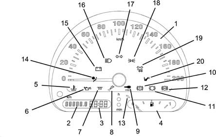
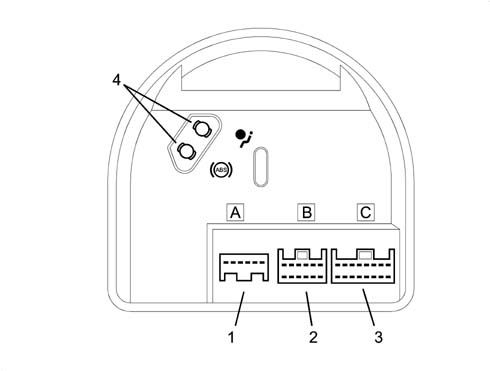
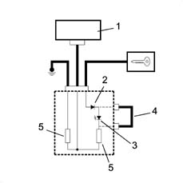
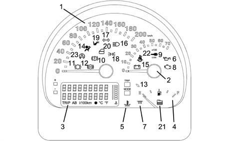
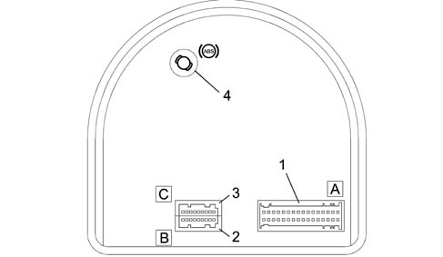
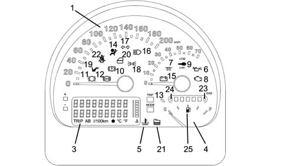
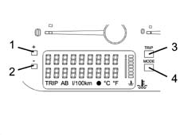
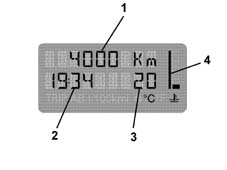
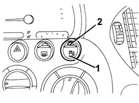

Introduction - INSTRUMENT PANEL
- Path
- Descriptions > 55 ELECTRICAL EQUIPMENT > 5560 INSTRUMENT PANEL > Introduction - INSTRUMENT PANEL
- Kind
- system description
- Applies to
- all engines; all production periods
- Interactive page
- https://sloeber94.github.io/elrnDB-fMltpl/en/#/2892455
Applies to: all engines; all production periods
LCD
Liquid Crystal Display This consists of elements where, after the electric current passes through, the transparency is altered, composing figures or letters according to the basic electrical circuit.
LED
The LED code (Light Emitting Diode) is used for particular diodes capable of emitting light at a certain wavelength when a low voltage electric current passes through.
The gauges and warning lights which form the instrument panel are grouped in a single instrument containing:
- electronic speedometer
- total mileage counter/trip recorder
- digital clock
- fuel gauge, with reserve warning light
- warning lights

1, electronic speedometer 2, total mileage counter/trip recorder 3, digital clock 4, fuel gauge 5, engine overheating warning light 6, low oil pressure warning light 7, heater plugs warning light 8, fuel injection failure warning light 9, Code failure warning light 10, insufficient brake fluid level/handbrake warning light 11, brake pad wear warning light 12, ABS failure warning light 13, fuel reserve warning light 14, Air Bag fault warning light 15, recharging warning light 16, main beam headlamps warning light 17, direction indicators warning light 18, side lights warning light 19, trailer direction indicators warning light 20, passenger Air Bag deactivation warning light
REAR VIEW
-

1, Connector A 2, Connector B 3, connector C 4, housing available for bridge for ABS/ Air Bag warning lights
Instrument pin-out
Connector A
Pin, Signal
1, direct supply
2, supply controlled by the ignition
3, power earth
4, electronic earth
5, left direction indicators warning light
6, right direction indicators warning light
Connector B
Pin, Signal
1, side lights warning light
2, main beam headlamps warning light
3, speedometer signal output (preparation)
4, fuel gauge signal
5, fuel gauge earth
6, Air Bag failure warning light
7, passenger Air Bag deactivation warning light
8, handbrake warning light
9, N.C.
10, N.C
11, N.C.
12, N.C.
Connector C
Pin, Signal
1, generator warning light
2, low oil pressure warning light
3, engine overheating warning light
4, heater plugs warning light
5, brake pad wear warning light
6, fuel injection failure warning light
7, ABS failure warning light
8, speedometer sensor supply
9, speedometer signal input
10, speedometer signal output
11, speedometer signal output
12, Code failure warning light
13, low brake fluid level warning light
14, EBD failure warning light
15, diesel preheating enablement
16, trailer direction indicators warning light
Speedometer signal
The speedometer signal comes from the specific sensor located on the gearbox.
The gauge display is produced by an electronic circuit inside the module. There are also some 'repeat' outputs of the signal for other systems which require this information.
Milometer
The milometer consists of an LCD which alternately shows the total and trip mileage.
The specific button switches between functions and resets the trip recorder:
- if the button is pressed briefly (less than about 2.5 s), it switches over between total/trip mileage
- if the button is pressed for longer (more than about 2.5 s) and the milometer is on trip recorder, the recorder is reset.
Zeroing the milometer
The total mileage counter can be reset only once - during the first 200 km - following handling during production or prior to delivery to the Customer.
In the case of a new instrument, the mileage reading is preceded by an 'H' (e.g. 'H00199').
After 200 km, the letter H disappears automatically and the reading becomes '000201'.
If the reset button is pressed before 200 km, the letter H disappears and the counting restarts from '000000'.
This operation can only be carried out once!
Clock
The digital clock is electronic with quartz oscillator. It is adjusted by means of a button inside the dial.
The time is adjusted using the 'h' and 'min' buttons.
The clock is set to zero if the battery is disconnected for over 10 seconds.
Lcd
The segments of the milometer and clock display can be tested as follows: turn the ignition on while holding down the reset button.
Fuel gauge
The fuel level is displayed via electronic circuitry inside the module, which operates the gauge and the warning light (which comes on when the gauge is at about 1/8 of its travel).
The internal logic 'dampens' the signal, preventing fluctuations (e.g. the warning light comes on if the signal persists for at least 100 s).
During starting, when the ignition is turned on, the warning light comes on for about 4 seconds as a self-test, then goes out.
If it stays on flashing, and at the same time the gauge goes to '0', this means that there is a fault in the connection (short circuit to earth or A.C.) or in the fuel gauge sender unit.
Warning lights
'intelligent' warning lights
Some warning lights come on not only to indicate a fault in the system they are checking, but also if there is a failed connection or a short to earth from the circuit which connects the warning light and relevant control unit: these warning lights have a special internal control circuit which checks that they are connected correctly.
These warning lights are:
- 'Air Bag failure'
- 'ABS failure'
If the vehicle is not fitted with ABS and/or Air Bag, a specific bridge is located on the back, level with the symbol which indicates the system in question
The relevant electrical circuit is shown in the following figure:

1, ABS or Air Bag control unit 2, protective diode 3, warning light LED 4, bridge 5, load resistors
'insufficient brake fluid level' and 'handbrake' warning light
The 'insufficient brake fluid level' and 'handbrake' warning light has a dual function:
- if it comes on, during driving, together with the 'ABS failure' warning light, it indicates a fault in the EBD braking system, managed by the ABS control unit (for further details refer to the description of the ABS)
- if, on the other hand, it comes on by itself, the brake fluid level is low or the handbrake is on.
Lighting
The instrument is lit up when the ignition is on.
The brightness of the instrument is dimmed with the side lights signal
Replacing bulbs
The warning lights consist of LEDs built into the electronic circuit, and so CANNOT be replaced.
Applies to: all engines; all production periods; only with equipment: ESP
CONSTRUCTION FEATURES
The gauges and warning lights which form the instrument panel are grouped in a single instrument containing:
electronic speedometer
electronic rev counter
fuel level guage - with reserve
warning lights
multifunction display: with milometer/trip recorder - outside temperature gauge - digital clock - Trip computer - oil level gauge

1 - speedometer
2 - rev counter
3 - multifunction display
4 - fuel gauge
5 - engine overheating warning light
6 - low oil pressure warning light
7 - plug preheating warning light
8 - injection system/EOBD failure warning light
9 - CODE fault warning light
10 - insufficient brake fluid level/handbrake/EBD system warning light
11 - brake pad wear warning light
12 - ABS fault warning light
13 - fuel reserve warning light
14 - Air Bag fault warning light
15 - recharging warning light
16 - main beam warning light
17 - direction indicators warning light
18 - side lights warning light
19 - passenger Air Bag deactivation warning light
20 - door open warning light
21 - water in diesel filter warning light
22 - seat belt not fastened warning light
23 - ASR/ESP system warning light
Rear view
The diagram below shows the rear view.

1 - connector A
2 - connector B
3 - connector C
4 - housing available for bridge for ABS warning light
Instrument pin-out
Connector A
Pin | Signal |
|---|---|
1 | engine temperature signal |
2 | fuel level signal |
3 | inertia switch |
4 | ABS configuration signal (N.C. on the ESP version) |
5 | speedometer signal input |
6 | rev counter signal input |
7 | fuel consumption signal |
8 | engine overheating signal |
9 | N.C. |
10 | oil level signal |
11 | handbrake warning light signal |
12 | serial line with ESP control unit |
13 | ESP system presence reference earth |
14 | ref. signal oil level |
15 | ref. signal engine temperature |
16 | ref. signal fuel level |
17 | direct power supply |
18 | electronic earth |
19 | supply controlled by the ignition |
20 | speedometer sensor supply |
21 | N.C. |
22 | N.C. |
23 | N.C. |
24 | N.C. |
25 | N.C. |
26 | N.C. |
27 | Air bag failure warning light |
28 | passenger Air Bag deactivation warning light |
29 | side lights warning light, instrument illumination |
30 | speedometer signal output |
31 | speedometer signal output |
32 | speedometer signal output |
Connector B
Pin | Signal |
|---|---|
1 | power earth |
2 | consumption signal for EOBD |
3 | heater plugs warning light |
4 | seat belt not fastened warning light |
5 | doors open warning light |
6 | CODE failure warning light |
7 | water in diesel filter warning light |
8 | recharging warning light |
9 | N.C. |
Connector C
Pin | Signal |
|---|---|
10 | left direction indicators warning light |
11 | right direction indicators warning light |
12 | main beam warning light |
13 | brake pad wear warning light |
14 | ESP configuration signal |
15 | low brake fluid level warning light |
16 | EOBD/injection system failure warning light |
17 | outside temperature signal |
18 | minimum engine oil pressure warning light |
Applies to: all engines; all production periods; only with equipment: Euro 3
CONSTRUCTION FEATURES
The gauges and warning lights which form the instrument panel are grouped in a single instrument containing:
electronic speedometer
electronic rev counter
fuel level gauge, with reserve
methane/LPG level gauge, with reserve (only for BIPOWER and LPG versions)
warning lights
multifunction display: with milometer/trip recorder - external temperature gauge - digital clock - Trip computer - oil level gauge - digital clock (only for JTD version)

1 - speedometer 2 - rev counter 3 - multifunction display 4 - fuel gauge 5 - engine overheating warning light 6 - low oil pressure warning light 7 - glow plug warning light (JTD version only) 8 - injection system/EOBD failure warning light 9 - CODE fault warning light 10 - low brake fluid level / handbrake warning light 11 - brake pad wear warning light 12 - ABS fault warning light 13 - fuel reserve warning light 14 - Air Bag fault warning light 15 - recharging warning light 16 - main beam warning light 17 - direction indicators warning light 18 - side lights warning light 19 - passenger Air Bag deactivation warning light 20 - door open warning light 21 - water in diesel filter warning light (only for JTD version) 22 - seat belt not fastened warning light 23 - methane/LPG level gauge (only for BIPOWER AND GPL versions) 24 - methane/LPG reserve warning light (only for BIPOWER AND LPG versions) 25 - petrol operation switching warning light (only for BIPOWER AND LPG versions)
Rear view
The diagram below shows the rear view.
1 - connector A 2 - connector B 3 - connector C 4 - housing available for bridge for ABS warning light
Instrument pin-out
Connector A
Pin | Signal |
|---|---|
1 | engine temperature signal |
2 | fuel level signal (except BLUPOWER version) |
3 | inertia switch |
4 | ABS failure warning light |
5 | speedometer signal input |
6 | rev counter signal input |
7 | fuel consumption signal (excluding JTD version) |
8 | engine overheating signal |
9 | pressure signal - level of methane or LPG in tank (only for BIPOWER AND LPG versions) |
10 | oil level signal (JTD only) |
11 | handbrake warning light signal |
12 | N.C. |
13 | N.C. |
14 | ref. signal oil level (JTD versions only) |
15 | ref. signal engine temperature (excluding JTD version) |
16 | ref. signal fuel level (excluding BLUPOWER version) |
17 | direct power supply |
18 | electronic earth |
19 | supply controlled by the ignition |
20 | speedometer sensor supply |
21 | N.C. |
22 | N.C. |
23 | N.C. |
24 | N.C. |
25 | N.C. |
26 | manual petrol/methane or LPG switching signal (only BIPOWER and LPG) |
27 | Air bag failure warning light |
28 | passenger Air Bag deactivation warning light |
29 | side lights warning light, instrument illumination |
30 | speedometer signal output |
31 | speedometer signal output |
32 | speedometer signal output |
Connector B
Pin | Signal |
|---|---|
1 | power earth |
2 | fuel consumption signal for EOBD (excluding JTD and BLUPOWER versions) |
3 | glow plug preheating warning light (only JTD version) |
4 | seat belt fastened warning light (N.C.) |
5 | doors open warning light |
6 | CODE failure warning light |
7 | water in diesel filter warning light (JTD only) |
8 | recharging warning light |
9 | N.C. |
Connector C
Pin | Signal |
|---|---|
10 | left direction indicators warning light |
11 | right direction indicators warning light |
12 | main beam warning light |
13 | brake pad wear warning light |
14 | EBD failure warning light |
15 | low brake fluid level warning light |
16 | injection system/EOBD failure AMBER warning light |
17 | outside temperature signal |
18 | minimum engine oil pressure warning light |
OPERATION
Speedometer
The speedometer signal comes from the specific sensor located on the gearbox.
The gauge display is produced by an electronic circuit inside the module. There are also some 'repeat' outputs of the signal for other systems which require this information.
Rev counter
The engine rpm signal comes from the engine management control unit.
The gauge display is produced by an electronic circuit inside the module.
Petrol gauge
The fuel level is displayed via electronic circuitry inside the module, which operates the gauge and the reserve warning light (which comes on when the gauge is at about 1/8 of its travel, corresponding to about 8-9 litres remaining in the tank).
The internal logic 'dampens' the signal, preventing fluctuations (e.g. the warning light comes on if the signal persists for at least 50 s).
During starting, when the ignition is turned on, the warning light comes on for about 4 seconds as a self-test, then goes out.
If it stays on flashing, and at the same time the gauge goes to '0', this means that there is a fault in the connection or in the fuel gauge sender unit.
Methane or LPG level (only for BIPOWER or LPG versions)
The methane or LPG level is displayed via electronic circuitry inside the actual module which operates the 6 green LEDs proportionally to the level measured in the circuit.
The internal logic 'dampens' the signal, preventing fluctuations (e.g. the reading changes when the signal persists for at least 250 ms. ).
Buzzer
Inside the instrument there is a buzzer which emits acoustic signals:
- a light signal ('roger beep') when the buttons are pressed;
- a deeper signal as an acoustic warning, together with the display of warning messages and the coming on of warning lights.
The volume of this acoustic signal is adjustable on the configuration menu screen; the exclusion of the buzzer ('OFF') only affects the 'roger beep': the fault warnings are however kept at minimum volume.
Buttons
The '+' and '-' buttons scroll through the various menus on the display.
The 'MODE' button gives access to the instrument's configuration menu and the various adjustments:
- short press (less than one second): move on to the next screen;
- long press (about 2 seconds): memorization of the situation displayed and return to initial screen.
The 'TRIP' button allows the Trip Computer to be set and displayed:
- short press (less than one second): move on to the next screen;
- long press (about 4 seconds): reset.

1 - '+' button 2 - '-' button 3 - 'TRIP' button 4 - 'MODE' button
Instrument illumination
The instrument is lit up when the ignition is on. The brightness is attenuated with the side lights signal, and can be adjusted on the specific configuration menu screen.
Multifunction display
The multifunction display gives the following information:
- milometer
- clock
- engine temperature
- engine oil level (JTD versions only)
- external air temperature
- Trip computer function
- Service function
- fault messages
During starting, when the ignition is turned on, the instrument carries out for about 4 seconds a diagnosis of the various functions and warning lights connected, after which 'OK' is displayed.
Standard operating screen

1 - milometer 2 - clock 3 - external temperature 4 - engine temperature
Instrument configuration menu
The instrument has several adjustment and configuration possibilities, managed via the specific menu accessed by the MODE key:
- instrument brightness adjustment
- acoustic signal (buzzer) volume adjustment
- selection of language for display (available languages: Italian, German, English, French, Spanish, Portuguese);
- selection of Trip computer unit of measurement
- selection of 12/24 hour mode (see 'Clock')
- switching on of legal time function (see 'Clock')
- switching on of TRIP B function (see 'Trip Computer')
- access to SERVICE function (see 'Service Function')
Milometer
The milometer displays either the total mileage or the trip mileage.
The total km are displayed on start-up.
By quickly pressing the 'TRIP' key (less than about 1 s), you change over to trip distance; the display returns to total mileage after 10 seconds, or if the button is pressed quickly.
By quickly pressing the 'TRIP' key (less than about 1 s), you change over to trip distance; the display returns to total mileage after 10 seconds, or if the button is pressed quickly.
Resetting mileage
The total mileage counter can be reset only once - during the first 200 km - following handling during production or prior to delivery to the Customer.
In the case of a new instrument, the mileage reading is preceded by an 'H' (e.g. 'H00199'). After 200 km, the letter H disappears automatically and the reading becomes '000201'.
If the two buttons '+' and '-' are pressed simultaneously for about 10 seconds before 200 km, the letter H disappears and the count starts again from '000000'. This operation can only be carried out once!
Clock
The digital clock is electronic with quartz oscillator. The time is adjusted using the 'MODE', '+' and '-' buttons.
The clock is not reset if the battery is disconnected only for an instant (less than about 4 seconds).
On the configuration menu, you can select the 12 or 24 hour display. On the configuration menu, you can select the 12 or 24 hour display.
Engine temperature
This is a seven-bar gauge; the last bar is red and lights up if the temperature reaches about 111°C. In this case, the indication is accompanied by an acoustic signal (buzzer) and a specific warning message on the display.
Oil level (jtd versions only)
During starting, when the ignition is turned on, the instrument carries out an initial test for about 4 seconds; the oil level is then displayed for about 5 seconds.
External air temperature
In the versions with automatic climate control system, the instrument receives the external air temperature information from the climate control unit.
The temperature is always shown on the display. To warn about the risk of ice, if the external temperature falls below about +3°C, the indication flashes, the relevant symbol appears and a specific warning message is displayed.
Trip computer
This function allows certain parameters relating to the vehicle's operation to be displayed:
- DISTANCE
- SPEED MEAN
- DURATION
Two different 'counts' are possible: TRIP A relating to a complete journey; TRIP B relating to a partial journey.
The TRIP B count is automatically reset if the engine is left off for at least two hours.
If a TRIP A display is reset, long press (about 4 seconds) of the 'TRIP' button, then TRIP B is also reset.
If a TRIP B display is reset, only TRIP B is reset.
The TRIP B function can be excluded from the configuration menu.
Service function
This is for accessing some information relating to vehicle maintenance, such as: tyre pressures, types of fluids to be used, etc.
You can also access the screen which reminds you of the km until the next routine service (set every 20,000 km).
On starting, when the ignition is turned on, if the mileage until the next routine service is less than 2000 km, a specific warning screen is displayed.
Once the service has been carried out, it is 'reset' to 20,000 km by pressing the '+' and '-' keys on the 'Service' menu simultaneously for 10 seconds.
Fault messages
Simultaneously with some fault and warning lights coming on, a specific message is also displayed, followed by a suggestion for the driver; an acoustic signal is also emitted via the buzzer.
This display disappears after 20 seconds or when the 'MODE' button is pressed, while the warning light stays on until the fault has been resolved.
On starting, if the fault has not been resolved, the message still appears.
Warning lights
During starting, when the ignition is turned on, the warning lights come on for about 4 seconds as a self-test, then go out.
'smart' warning lights
Some warning lights come on not only to indicate a fault in the system they are checking, but also if there is a failed connection or a short to earth from the circuit which connects the warning light and relevant control unit: these warning lights have a special internal control circuit.
These warning lights are:
- Air Bag failure
- ABS failure
The Air Bag system is standard, while if the car does not have ABS, on the rear - corresponding to the symbol - there is a specific bridge; the relevant electrical circuit is shown in the figure below.
1 - ABS or Air Bag control unit 2 - protection diode 3 - warning light LED 4 - bridge 5 - load resistors
Injection/ eobd system failure warning light (except blupower and jtd version): amber warning light
The EOBD (European On Board Diagnosis) system - conforming to Directive 98/69/CE (EURO 3) - permits continuous diagnosis of the car's petrol fuel system components relating to emissions, and by the warning light coming on, indicates any deterioration of these components.
Among other things, the system diagnoses:
- catalytic converter, which in the case of a malfunction does not convert the pollutants produced by the engine;
- Lambda sensors (oxygen sensors);
- lack of combustion, so unburnt fuel reaches the catalyzer where the thermal conversion reactions cause a sudden increase in temperature, damaging the catalyzer.
Injection system failure warning light (only blupower and jtd): red warning light
In this case, the warning light simply indicates a fault in the injection system that could lead to power loss and higher fuel consumption.
Petrol / lpg fuel supply changeover warning light (only bipower or lpg versions)
The engine normally runs on methane. if the LPG runs out, the system automatically switches over to running on petrol and the appropriate warning light comes on. Once the methane or LPG has been refilled, the system automatically switches back to running on methane or LPG.
The special switching button in the dashboard makes it possible to switch manually to running on petrol: in such a case both the green LED on the button and the special warning light in the instrument panel come on.
When the button is re-pressed the system switches back to methane or LPG.

1, Button for switching to petrol 2, LED signalling petrol operation
Replacing warning lights
The warning lights consist of LEDs built into the electronic circuit, and so CANNOT be replaced.
Applies to: all engines; production: da 09/03
CONSTRUCTION FEATURES
The gauges and warning lights which form the instrument panel are grouped in a single instrument containing:
electronic speedometer
electronic rev counter
fuel level gauge - with reserve
methane level gauge, with reserve (only for BIPOWER versions)
warning lights
multifunction display: with milometer/trip recorder - external temperature gauge - digital clock - Trip computer - oil level gauge - digital clock (only for JTD version)
1 - speedometer 2 - rev counter 3 - multifunction display 4 - fuel gauge 5 - engine overheating warning light 6 - low oil pressure warning light 7 - Glow plug warning light (JTD version only) - 8 - fuel injection/EOBD system fault warning light 9 - Code fault warning light 10 - low brake fluid level / handbrake warning light 11 - brake pad wear warning light 12 - ABS fault warning light 13 - fuel reserve warning light 14 - Air Bag fault warning light 15 - recharging warning light 16 - main beam warning light 17 - direction indicators warning light 18 - side lights warning light 19 - passenger Air Bag deactivation warning light 20 - door open warning light 21 - water in diesel filter warning light (only for JTD version) 22 - seat belt not fastened warning light 23 - methane level gauge (only for BIPOWER versions) 24 - methane reserve warning light (only for BIPOWER versions) 25 - petrol operation switching warning light (only for BIPOWER versions)
Rear view
The diagram below shows the rear view.
1 - connector A 2 - connector B 3 - connector C 4 - housing available for bridge for ABS warning light
Instrument pin-out
Connector A
Pin | Signal |
|---|---|
1 | engine temperature signal |
2 | fuel level signal |
3 | inertia switch |
4 | ABS failure warning light |
5 | speedometer signal input |
6 | speedometer signal input |
7 | Fuel consumption signal (excluding JTD version) |
8 | engine overheating signal |
9 | methane level in tank - pressure signal(BIPOWER only) |
10 | Oil level signal (JTD only) |
11 | handbrake warning light signal |
12 | N.C. |
13 | N.C. |
14 | ref. signal oil level (JTD version only) |
15 | ref. signal engine temperature (excluding JTD version) |
16 | ref. signal fuel level |
17 | direct power supply |
18 | electronic earth |
19 | supply controlled by the ignition |
20 | speedometer sensor supply |
21 | N.C. |
22 | N.C. |
23 | N.C. |
24 | N.C. |
25 | N.C. |
26 | petrol/methane manual switching signal(BIPOWER only) |
27 | Air Bag failure warning light |
28 | passenger Air Bag deactivation warning light |
29 | side lights warning light, instrument illumination |
30 | speedometer signal output |
31 | speedometer signal output |
32 | speedometer signal output |
Connector B
Pin | Signal |
|---|---|
1 | power earth |
2 | fuel consumption signal for EOBD (excluding JTD versions) |
3 | glow plug preheating warning light (only JTD version) |
4 | seat belt fastened warning light (N.C.) |
5 | doors open warning light |
6 | CODE failure warning light |
7 | water in diesel filter warning light (JTD only) |
8 | recharging warning light |
9 | N.C. |
Connector C
Pin | Signal |
|---|---|
10 | left direction indicators warning light |
11 | right direction indicators warning light |
12 | main beam warning light |
13 | brake pad wear warning light |
14 | EBD failure warning light |
15 | low brake fluid level warning light |
16 | EOBD/injection system failure warning light |
17 | outside temperature signal |
18 | minimum engine oil pressure warning light |
OPERATION
Speedometer
The speedometer signal comes from the specific sensor located on the gearbox.
The gauge display is produced by an electronic circuit inside the module. There are also some 'repeat' outputs of the signal for other systems which require this information.
Rev counter
The engine rpm signal comes from the engine management control unit.
The gauge display is produced by an electronic circuit inside the module.
Petrol gauge
The fuel level is displayed via electronic circuitry inside the module, which operates the gauge and the reserve warning light (which comes on when the gauge is at about 1/8 of its travel, corresponding to about 8-9 litres remaining in the tank).
The internal logic 'dampens' the signal, preventing fluctuations (e.g. the warning light comes on if the signal persists for at least 50 s).
During starting, when the ignition is turned on, the warning light comes on for about 4 seconds as a self-test, then goes out.
If it stays on flashing, and at the same time the gauge goes to '0', this means that there is a fault in the connection or in the fuel gauge sender unit.
Methane gauge (BIPOWER versions only)
The methane level is displayed via electronic circuitry inside the actual module which operates the 6 green LEDs proportionally to the pressure measured in the circuit.
The internal logic 'dampens' the signal, preventing fluctuations (e.g. the reading changes when the signal persists for at least 250 ms. ).
Buzzer
Inside the instrument there is a buzzer which emits acoustic signals:
- a light signal ('roger beep') when the buttons are pressed;
- a deeper signal as an acoustic warning, together with the display of warning messages and the coming on of warning lights.
The volume of this acoustic signal is adjustable on the configuration menu screen; the exclusion of the buzzer ('OFF') only affects the 'roger beep': the fault warnings are however kept at minimum volume.
Buttons
The '+' and '-' buttons scroll through the various menus on the display.
The 'MODE' button gives access to the instrument's configuration menu and the various adjustments:
- short press (less than one second): move on to the next screen;
- long press (about 2 seconds): memorization of the situation displayed and return to initial screen.
The 'TRIP' button allows the Trip Computer to be set and displayed:
- short press (less than one second): move on to the next screen;
- long press (about 4 seconds): reset.
1 - '+' button 2 - '-' button 3 - 'TRIP' button 4 - 'MODE' button
Instrument illumination
The instrument is lit up when the ignition is on. The brightness is attenuated with the side lights signal, and can be adjusted on the specific configuration menu screen.
Multifunction display
The multifunction display gives the following information:
- mileometer
- clock
- engine temperature
- engine oil level (JTD versions only)
- external air temperature
- Trip computer function
- Service function
- fault messages
During starting, when the ignition is turned on, the instrument carries out for about 4 seconds a diagnosis of the various functions and warning lights connected, after which 'OK' is displayed.
Standard operating screen
1 - mileometer 2 - clock 3 - external temperature 4 - engine temperature
Instrument configuration menu
The instrument has several adjustment and configuration possibilities, managed via the specific menu accessed by the MODE key:
- instrument brightness adjustment
- acoustic signal (buzzer) volume adjustment
- selection of language for display (available languages: Italian, German, English, French, Spanish, Portuguese);
- selection of Trip computer unit of measurement
- selection of 12/24 hour mode (see 'Clock')
- switching on of legal time function (see 'Clock')
- switching on of TRIP B function (see 'Trip Computer')
- access to SERVICE function (see 'Service Function')
Milometer
The milometer displays either the total mileage or the trip mileage.
The total km are displayed on start-up.
By quickly pressing the 'TRIP' key (less than about 1 s), you change over to trip distance; the display returns to total mileage after 10 seconds, or if the button is pressed quickly.
If the button is pressed for longer (more than about 4 seconds) and the milometer is on trip display, you reset the trip recorder.
Resetting mileage
The total mileage counter can be reset only once - during the first 200 km - following handling during production or prior to delivery to the Customer.
In the case of a new instrument, the mileage reading is preceded by an 'H' (e.g. 'H00199'). After 200 km, the letter H disappears automatically and the reading becomes '000201'.
If the two buttons '+' and '-' are pressed simultaneously for about 10 seconds before 200 km, the letter H disappears and the count starts again from '000000'. This operation can only be carried out once!
Clock
The digital clock is electronic with quartz oscillator. The tiime is adjusted using the 'MODE', '+' and '-' buttons.
The clock is not reset if the battery is disconnected only for an instant (less than about 4 seconds).
On the configuration menu, you can select the 12 or 24 hour display. The 'summer time' function is also available, which automatically switches the legal time on or off.
Engine temperature
This is a seven-bar gauge; the last bar is red and lights up if the temperature reaches about 111°C. In this case, the indication is accompanied by an acoustic signal (buzzer) and a specific warning message on the display.
Oil gauge (jtd versions only)
During starting, when the ignition is turned on, the instrument carries out an initial test for about 4 seconds; the oil level is then displayed for about 5 seconds.
External air temperature
In the versions with automatic climate control system, the instrument receives the external air temperature information from the climate control unit.
The temperature is always shown on the display. To warn about the risk of ice, if the external temperature falls below about +3°C, the indication flashes, the relevant symbol appears and a specific warning message is displayed.
Trip computer
This function allows certain parameters relating to the vehicle's operation to be displayed:
- DISTANCE
- SPEED MEAN
- DURATION
Two different 'counts' are possible: TRIP A relating to a complete journey; TRIP B relating to a partial journey.
The TRIP B count is automatically reset if the engine is left off for at least two hours.
If a TRIP A display is reset, long press (about 4 seconds) of the 'TRIP' button, then TRIP B is also reset.
If a TRIP B display is reset, only TRIP B is reset.
The TRIP B function can be excluded from the configuration menu.
Service function
This is for accessing some information relating to vehicle maintenance, such as: tyre pressures, types of fluids to be used, etc.
You can also access the screen which reminds you of the km until the next routine service (set every 20,000 km).
On starting, when the ignition is turned on, if the mileage until the next routine service is less than 2000 km, a specific warning screen is displayed.
Once the service has been carried out, it is 'reset' to 20,000 km by pressing the '+' and '-' keys on the 'Service' menu simultaneously for 10 seconds.
Fault messages
Simultaneously with some fault and warning lights coming on, a specific message is also displayed, followed by a suggestion for the driver; an acoustic signal is also emitted via the buzzer.
This display disappears after 20 seconds or when the 'MODE' button is pressed, while the warning light stays on until the fault has been resolved.
On starting, if the fault has not been resolved, the message still appears.
Warning lights
During starting, when the ignition is turned on, the warning lights come on for about 4 seconds as a self-test, then go out.
'smart' warning lights
Some warning lights come on not only to indicate a fault in the system they are checking, but also if there is a failed connection or a short to earth from the circuit which connects the warning light and relevant control unit: these warning lights have a special internal control circuit.
These warning lights are:
- Air Bag failure
- ABS failure
The Air Bag system is standard, while if the car does not have ABS, on the rear - corresponding to the symbol - there is a specific bridge; the relevant electrical circuit is shown in the figure below.
1 - ABS or Air Bag control unit 2 - protection diode 3 - warning light LED 4 - bridge 5 - load resistors
Fuel injection / eobd fault warning light - the amber warning light is activated by the engine control unit for about 4 seconds (check) when the ignition key is turned to 'mar'.
The EOBD (European On Board Diagnosis) system - conforming to Directive 98/69/CE - permits continuous diagnosis of the car's petrol fuel system components relating to emissions, and by the warning light coming on, indicates any deterioration of these components.
The aim of the system is:
- keeping the efficiency of the system under control;
- signalling an increase in emissions due to a vehicle malfunction;
- signalling the need to replace deteriorated components.
Petrol / lpg fuel supply changeover warning light (only bipower or lpg versions)
The engine normally runs on methane; if the methane runs out, the system automatically switches over to running on petrol and the appropriate warning light comes on. Once the methane has been refilled, the system automatically switches back to running on methane.
The special switching button in the dashboard makes it possible to switch manually to running on petrol: in such a case both the green LED on the button and the special warning light in the instrument panel come on.
By pressing the button again, methane operation is restored.
1, Button for switching to petrol 2, LED signalling petrol operation
Replacing warning lights
The warning lights consist of LEDs built into the electronic circuit, and so CANNOT be replaced.
Applies to: engines: 1.6 16v; all production periods; only with equipment: BIPOWER
GLOSSARY
LCD
Liquid Crystal Display This consists of elements where, after the electric current passes through, the transparency is altered, composing figures or letters according to the basic electrical circuit.
LED
The LED code (Light Emitting Diode) is used for particular diodes capable of emitting light at a certain wavelength when a low voltage electric current passes through.
Applies to: engines: 1.6 16v; all production periods; only with equipment: BLUPOWER
GLOSSARY
LCD
Liquid Crystal Display This consists of elements where, after the electric current passes through, the transparency is altered, composing figures or letters according to the basic electrical circuit.
LED
The LED code (Light Emitting Diode) is used for particular diodes capable of emitting light at a certain wavelength when a low voltage electric current passes through.